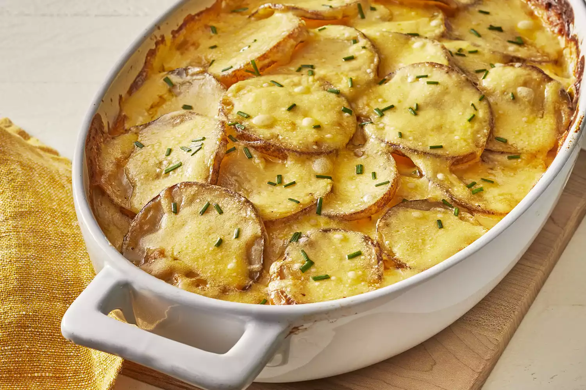

Gratin-Potato

Description
There's nothing like au gratin potatoes
to take any meal over the top. The creamy, decadent, and
oh-so satisfying recipe is sure to please everyone at your table.
Ingredients
- Potatoes
- Onion
- Seasonings
- Butter and flour
- Milk
- Cheese
Steps
- Assemble the casserole: Layer half of
the potatoes in the bottom of the prepared baking dish.
Season. Layer onion slices over top, then top
with remaining potatoes. Season again.
- Make the sauce: Melt the butter in a saucepan.
Gradually whisk in flour and salt and cook for about 1 minute.
Gradually whisk in the milk. Cook, whisking constantly,
until the mixture has thickened. Stir in the cheese.
- Bake the casserole: Pour the sauce
over the potatoes. Cover the dish with foil and
bake in the preheated oven until
the potatoes are tender and the sauce is bubbling.